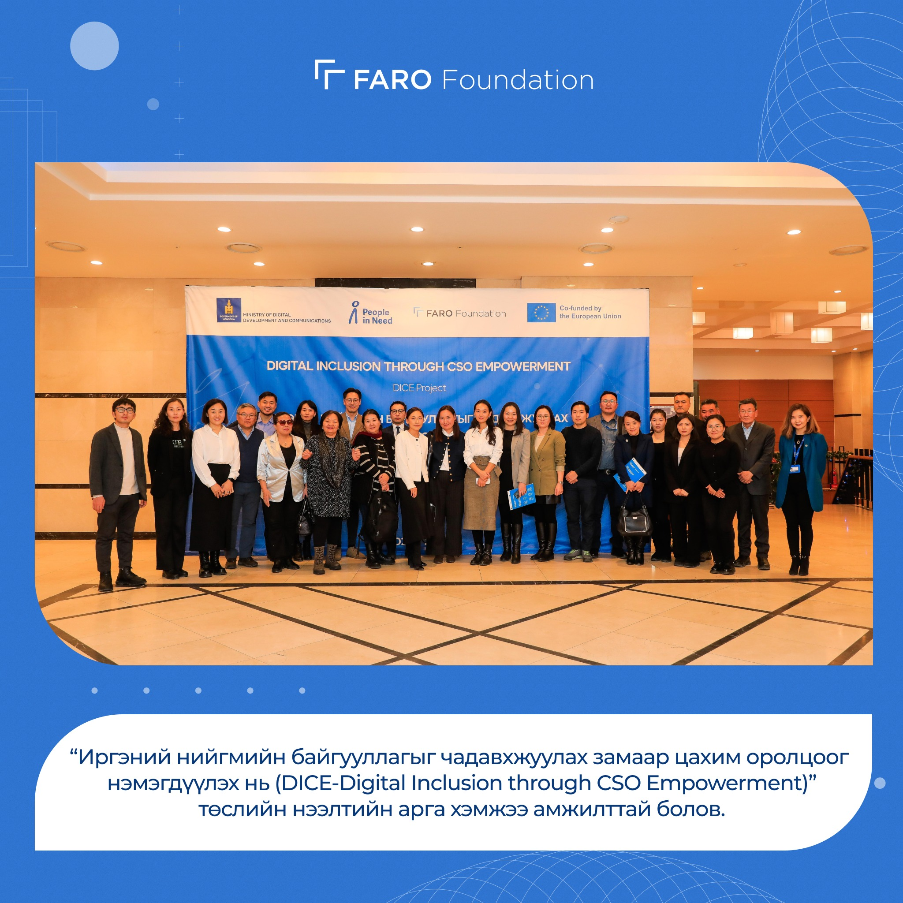

Bridging the Digital Divide in Rural Mongolia: A Five-Year Retrospective

Five years ago, FARO Foundation launched its first digital literacy program in three rural aimags in eastern Mongolia. At the time, the initiative felt like a modest experiment — a handful of trained facilitators, a borrowed projector, and a curriculum we were frankly making up as we went. What we didn't know then was how profoundly targeted, community-rooted digital training would shift not just skills, but economic trajectories.
This piece is an honest look back at what worked, what didn't, and what the evidence tells us now.
The Problem We Set Out to Solve
In 2019, internet penetration in rural Mongolian aimags stood at 38% — compared to 87% in Ulaanbaatar. More striking than the connectivity gap, though, was the skills gap. Even in communities with reliable mobile data, usage was largely passive: social media consumption, messaging apps, and video streaming. Very few residents were using digital tools to access government services, manage finances, or connect with markets beyond their immediate geography.
The standard narrative blamed infrastructure. FARO's hypothesis was different: connectivity alone wasn't the bottleneck. Confidence and literacy were. We set out to test that.
What We Built
The program ran across three phases. In the first year, we trained 18 seed facilitators — teachers, soum administrators, and community health workers — in a two-week intensive program at our Ulaanbaatar centre. We deliberately chose people with existing community trust rather than technical backgrounds.
Those facilitators then delivered structured 12-session modules in their home communities, covering online safety, government service navigation, basic financial tools, and digital communication for small businesses. Sessions ran twice a week, often in soum centres or school libraries after hours.
"I didn't think I could learn this at 54. Now I file my herdsman registration online and I helped my daughter apply for university from here."
— Participant, Dornod Aimag, 2021
By year three, we had expanded to eleven aimags and trained over 6,200 residents directly. The train-the-trainer model compounded: our 18 original facilitators had collectively trained another 34 community educators, who in turn reached communities we had never visited.
What the Data Shows
We tracked outcomes through three annual surveys, conducted independently by the Mongolian Statistical Office. The headline numbers are encouraging: 71% of program graduates reported using digital tools to access at least one government service within six months of completing the program. 44% reported increased income or reduced transaction costs attributable to digital tools — primarily through online livestock market access and digital banking.
But the most surprising finding was on confidence. Before the program, 68% of participants described themselves as "unable" or "too old" to learn digital skills. After twelve sessions, that number dropped to 11%. We believe this shift in self-perception is as consequential as any specific skill gained — it opens the door to continued self-directed learning.
Where We Fell Short
Not everything worked. Retention among participants over 60 was significantly lower than among younger cohorts, and our facilitator support structures weren't strong enough to address this. Several facilitators reported feeling isolated after their initial training with no structured peer learning or refresher support. We also underestimated the logistical challenge of reaching semi-nomadic herding communities during seasonal migrations.
And then there was content currency. Digital tools evolve fast. By 2022, several modules felt dated — references to platforms that had fallen out of use, and gaps around mobile payment systems that had become central to rural commerce. We've since built a quarterly content review into our operational calendar.
What Comes Next
The next chapter involves two strategic shifts. First, we're moving from broad digital literacy to sector-specific modules — one track for herders and agricultural producers, one for soum civil servants, one for small retail operators. The evidence suggests targeted relevance dramatically improves retention and application.
Second, we're investing in a peer network of our facilitator graduates — a structured community of practice where experienced facilitators mentor newer ones and share updated content. The goal is to make the program self-sustaining at the local level rather than dependent on FARO's continued presence.
Five years in, the core lesson is simple: digital exclusion is not primarily a technical problem. It's a human one. And it responds to human solutions — trust, patience, relevance, and the willingness to meet people where they are.